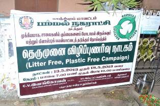
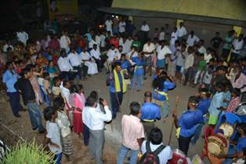

“Litter Free and Plastic Free Pammal” is the theme for this year’s awareness generation programme conducted by Exnora Green Pammal in Pammal Municipality. Exnora Green Pammal with the support of the Pammal Municipal Administration conducted a week-long awareness generation programme in 12 wards from the 13th May 2013 to 18th May 2013.
Exnora Green Pammal is a pioneer in implementing solid waste management programmes according to the Municipal Solid Waste Management Rules, 2000 using door to door collection, segregation, resource recovery as the strategies. Apart from Pammal Municipality, Exnora Green Pammal is implementing the solid waste management programmes in a dozen municipalities. Solid waste management goes hand in hand with the public as the programmes are for the public. Hence it is imperative that awareness generation programmes are conducted, so that the public become aware of the causes and effect of the garbage accumulating in their area and the impact in the long run on their health and economy.
|  |  |
Knowing the seriousness of the issue, Exnora Green Pammal conducts awareness generation programmes on various topics every year using folk lore, Thappattam and street theatre. This year the theme was “Liter Free and plastic free pammal”. A street theatre team called “ Mugavari” from Trichy came to Pammal to perform on the theme in the wards 12,13,14,15,16,17,18,19,20 and 21. The Chairman of Pammal Municipality, Mr.C.V. Illangovan, B.A, B.L., along with vice-chairman, Councilors, Commissioner, and sanitary inspectors and staff provided their support and participated along with the Exnora Green Pammal team on all days from 13th May 2013 to 18th May 2013 from 6 pm to 10 pm.
The street theatre team performed on how the waste has to be segregated and because of dumping waste in the gutters, how the public are affected in terms of health issues using songs, skits and dance performances. At the end of each day’s performance, the team selected 5 volunteers who will take the message and put in action for that ward.


{kind=link}
{kind=link}
{kind=link}
{kind=link}
{kind=link}